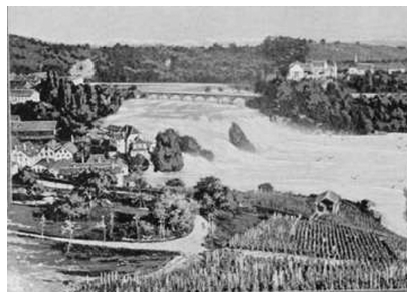

Konstanz’dayken hava bunaltıcı ve sisliydi; bizi halsiz bıraktı. Büyük ve ıssız gölde yolculuk eğlenceli değildi.
Konstanz’dan ayrıldığımda Ren’den Schaffhausen’e giden küçük bir gemideydim. Yolculuk harikaydı. Sis, suyun ve ırmağın geniş kenarlarında hâlâ asılıydı. Sabah güneşi, mavimsi sis altında güzel sarı ışıklar dağıtıyordu. Her şey dünyanın başlangıcı gibi görünüyordu. Gökyüzünde iki kargayla boğuşan bir şahin vardı. Sürekli yükseliyorlardı. Karga, saldırgan şahinin üzerinde parlıyor; Almanlar gökyüzünde süren bu kavgayı güvertede zevkle izliyordu.
Sonra ırmak boyunca, eski, sevimli köylerin kırmızı ve dik çatılarının üst üste dizildiği köprülerin altından geçerek gözden kaybolduk. Sessizce geçmişin belirsizliğinde, uzakta yitiyorduk. Bütün bunlar gerçek olamazdı. Gemi kıyıya yanaştığında ve gümrük memurları geldiklerinde bile köy Almanya’nın romantik geçmişinde, Alman masalları ve ortaçağ halk ozanları arasında, uzakta kaldı. Irmağın sisinde yüzen geçmişin yakıcılığı dayanılmazdı.
Beyaz ve gölgeli bedenleri suyun altında titreyerek gemi boyunca kulaç atan yüzücüleri geçtik. Sarışın bir adam başını ve bir kolunu sudan kaldırdı. Sanki bir Niebelung[155] gibi kaldırdığı koluyla bizi selamladı. Yüzü gülüyordu, sarı bıyığı ağzının üstünde asılıydı. Sonra beyaz bedeni suda kıvrıldı ve yanlamasına yüzerek gözden kayboldu.
Schaffhausen kasabası yarı eski, yarı modern bir yer. Bira fabrikaları ve sanayi kolları var. Orta yerdeki fabrikalar ve aşağıdaki otel, Schaffhausen çağlayanlarını çirkinleştiriyor.[156]
İsviçre üzerinden çağlayanlar boyunca İtalya’ya yürümeye başladığımda öğleden sonraydı. Baden’in bu bölümlerinin büyük, nemli, bereketsiz ve kasvetli tarlalarını anımsadım. Bir demiryolu setindeki tarlada bir ağacın altında elmalar ve sonra da mantarlar bulduğumu hatırladım, her ikisini de yedim. Sonra her iki yakasında solgun ağaçlar bulunan terk edilmiş uzun yola geldim. Yol, tarlalarda çalışan kadın ve erkek gruplarıyla çevrelenmişti. Upuzun yoldan tek başıma ve tüm dünyaya karşı yürüdüğümde bana baktılar.
Sınır köyünde hiç kimsenin bavulumu incelemek için gelmediğini hatırlıyorum. Sorunsuz geçtim. Her şey bu büyük toprağın parçalarıyla sessiz, ölü ve umutsuzdu.
Gün batışı kırmızı-mor bir renkte birdenbire açığa çıkana dek yeniden Ren vadisine daldım. Başka bir parıltılı dünyaya dalar gibi.
Tepelere kadar yüksek asmaların kapladığı gizemli ve romantik yamaçlar arasında akıyordu ırmak. Yüksek evlerden oluşan köyün ışıkları, ırmak üstünde sessizce titreşiyordu.
Güzel, üstü örtülü, koyu renkli bir köprünün ortasına gelince kemerden aşağıda akan kahverengi suya baktım. Işıkların yan tarafında köyün ön yüzü, ırmağın üstünden sessizce ve uzakta yükseliyordu. Tepeler, suyun her iki yanındaydı; aşağıda birbirinden habersiz köy topluluklarının ve gezgin halk ozanlarının var olduğu bir zamana ait küçük, unutulmuş ve muhteşem bir dünya vardı.
“Altın Geyik” pansiyonuna geri döndüm. Birkaç basamak çıkarak seslendim. Bir kadın geldi, yemek istedim. Kadın beni önce yaklaşık üç metre çapında kocaman fıçıların olduğu bir odadan; sonra yüzyıllar öncesinden kalma eski tavaların bulunduğu taşlı, büyük bir mutfaktan geçirdi. Akşam yemeği için birkaç basamak yukarıdaki konuk odasına getirdi.
Birkaç kişi yemek yiyordu. Abendessen[157] istedim. Aşağıdaki ırmağın karanlığına, üstü kapalı köprüye ve ışıklarla taçlanmış karşıdaki tepelere bakan pencerenin yanındaki sandalyeye oturdum.
Sonra büyük bir tabak knödel[158] çorbasıyla ekmek yedim, bira içtim, uykum geldi. Yalnızca bir iki köylü geldi, onlar da kısa sürede gitti. Bulunduğumuz yer yine sessizleşti. Odanın karşı tarafındaki uzun bir masada üstü başı dağınık, saygısız yedi sekiz adam oturmuştu. Bir başkası daha geç geldi. Pansiyoncu kadın gönülsüzce hizmet ederek onlara knödel’li koyu bir çorba, ekmek ve et verdi. Sekiz dokuz dilenci, işten çıkmış serseri, o uzun masada oturup bir çeşit duygusuzluk ve mekaniklikle yedi yemeğini. Kurt gibi aç, etraflarına bakınarak ve bazen de sırıtarak. Mahkûmlar gibi sinmiş, boyun eğmiş; ama yine de küstahça. Sonunda biri bağırarak nerede uyuyacağını sordu. Pansiyon sahibi, genç hizmetçiyi çağırdı ve adamlar geleneksel Alman sertliğiyle taş merdivenlerden ikili ve üçlü gruplar halinde odalarına çıkarıldı. Saat henüz sekiz olmamıştı. Kadın, elinde işiyle, sakallı, aklı başında, ciddi bir adamla konuşmaya başladı. Bir yandan sürekli dikiş dikiyordu.
Dilenciler ve serseriler odadan ayrılırken, birkaç tanesi neşeyle ve saygısızca bağırdı:
“Nacht, Frau Wirtin- G’Nacht, Wirtin-’te Nacht Frau.”[159] Kadın hepsine alışılmış bir “Gute Nacht”la başını dikişten kaldırmadan ya da yukarıya tek sıra halinde çıkan adamlara seslendiğini en ufak bir biçimde belli etmeden yanıt verdi.
Böylece oda boşaldı. Bu, dikişiyle uğraşmak isteyen pansiyoncu kadın, kadının bozuk bir şiveyle[160] konuştuğu ağırbaşlı, yaşlı köylü adam ve serserilerin tabak ve çanaklarını toplayan hizmetçi kız için iyi bir haberdi.
Sonra köylü de gitti.
Kadına, “Gute Nacht, Frau Seidl,” dedi; bana da öylesine bir “Gute Nacht”.
Gazeteye baktım. Sonra nasıl başlayacağımı bilemeden kadından bir sigara istedim. Kadın masama geldi ve konuşmaya başladık.
Kendime romantik bir gezgin havası vermek hoşuma gitti. Kadın Almancamın “schön”[161] olduğunu söyledi. Biraz çaba çok yol aldırır insana.
O uzun masada oturan adamların kimler olduğunu sordum ona. Tavırları sertleşip kabalaştı.
“İş arayan adamlar,” dedi, sanki tatsız bir konudan söz eder gibi.
“Niçin buraya bu kadar kalabalık geliyorlar?” diye sordum.
Bana bu ülkeden ayrılmakta olduklarını söyledi: Burası sınırdaki son köydü. Her köydeki nöbetçi görevlinin her serseriye belli bir handa akşam yemeği, yatak ve kahvaltı içeren bir bilet verme yetkisi vardı. Burası bu köye gelen serseriler için kullanılan handı. Kadın kişi başına dört peni alıyordu. Sanırım bu gezginlerin her biri için fiyat buydu.
“Az,” dedim.
“Hiçbir şey,” diye yanıtladı.
Konu hiç hoşuna gitmemişti. Yalnızca bana olan saygısı ona yanıt verdiriyordu.
“Bettler, Lumpen, Taugenichtse!”[162] dedim gülerek.
“Ve işsizler ve kendi mahallerine geri dönenler,” dedi sertçe.
Biraz daha konuştuk ve ben de yatmaya gittim.
“Gute Nacht, Frau Wirtin.”
“Gute Nacht, mein Herr.”
Böylece ben de genç kadınla birlikte taş merdivenlerden yukarıya çıktım. Çamur renginde kapıları olan büyük, yüksek tavanlı, eski bir evdi.

Ren çağlayanları, Schaffhausen
Sonunda en üst kattaki iki yataklı, çıplak zeminli, az eşyalı odama geldim. Aşağıdaki ırmağa, üstü kapalı köprüye, karşıdaki tepenin uzak ışıklarına baktım. Bu terk edilmiş, unutulmuş yerde olmak, dilenciler ve serserilerle aynı çatı altında uyumak tuhaftı. Dışarıda bırakırsam botlarımı çalıp çalmayacaklarını düşündüm. Ama bu riski göze aldım. Boşalmış kapı kolu koridorda büyük bir gürültü çıkardı. Her yer terk edilmiş ve unutulmuş. Sekiz dilenci ve serserinin uyuyup uyumadığını merak ettim. Kapıyı korumanın bir yolu yoktu. Yazgımda soyulmak ya da öldürülmek varsa, bunların dilenciler ve serseriler tarafından yapılmayacağını hissettim. Mumu söndürdüm, büyük yatağa ortaçağa ait Ren’in akışını ve fısıldayışını dinleyerek uzandım.
Uyandığımda hava güneşliydi; aşağıdaki ırmak karanlıkta akmasına karşın karşıdaki tepede sabah olmuştu.
Dilenciler ve serserilerin hepsi gitmişti: Sabah saat yedide toplanmış olmalılar. Pansiyon bana kalmıştı; bana, sahibine ve hizmetçi kıza. Her yer tertemizdi; ortalık bir Latin sabahından farklı olarak, Alman sabahlarının enerjisi ve parlaklığıyla doluydu. İtalyanlar sabahları ölü ve uyuşuktur; Almanlarsa enerjik ve neşeli.
Güneşli bir sabahta hızla akan ırmağa, üstü kapalı, güzelim köprüye, karşıdaki tepeye bakmak keyifliydi. Karşıdaki tepenin kıvrılan yolundan aşağıya, mavi üniformaları içinde İsviçre süvarileri indi. Onları izlemek için dışarıya çıktım. Üstü kapalı köprünün derinliklerinden gümbür gümbür geldiler ve köyün girişinde atlarından indiler. Her yerde, süvarilerin gelişinde, köylülerin karşılamasında yeni ve neşeli bir sabah tazeliği vardı.
İsviçreliler ne donanımlarında ne de duruşlarında askere benzemiyor.[163] Bu ufak manga bir ordudan çok kendi başlarına bir iş için ata binen bir grup sıradan insana benziyor. İsviçreliler, Cumhuriyetçi ve özgürdür. Onlara emir veren komutan içlerinden biridir; otoritesi ötekilerce onaylanır.
Tüm bunlar çok hoştu ve gerçekçiydi, Almanların o mekanik ve somurtkan tatbikatlarından çok farklı bir rahatlık ve huzurla doluydu.
Köyün fırıncısıyla çırağı, fırından taşıdıkları bir sepet dolusu taze ekmekle, terlemiş, un içinde geldi. Süvariler köprü girişinde atlarından inmiş; iş adamları gibi yiyip içiyorlardı. Köylüler arkadaşlarını selamlamaya geldi: Bir asker deri bir önlük giyen babasını öptü. Okul zili yukarıdan çınladı; öğrenciler kitaplarıyla evlerin arasından çıktı, dar sokaktan yukarıya doğru isteksizce geçtiler. Irmak hızlı hızlı aktı; üniformaları içinde dağınık ve gelişigüzel duran askerler, gerçek serseriler, ekmeklerini ağız dolusu çiğnedi; yalnızca oradakilerin onayıyla komutan olmuş genç teğmen köprü girişinde ötekilerden uzakta ciddi duruyordu. Hepsi ciddi, kendinden hoşnut ve gösterişsizdi. Bu, at üzerinde yapılan zararsız ve ilgi uyandırmayan bir iş seyahatiydi. Üniformaları gülünç, uygunsuz ve sıradandı.
Çantamı sırtıma yükledim ve Ren üstündeki köprüden geçip karşıdaki tepeye doğru yol aldım.
Bu ülkeyle ilgili ölü bir duygu var. Ben, yol kenarındaki bahçeden elma topladığımı hatırlıyorum; bazıları çok tatlıydı. Ama öteki insanlar için kilometreler boyu esin vermeyen, ölü bir ülke vardı. O kadar sıradan ki neredeyse yok edici, yıkıcı.
İnsan bu duyguyu yüksek yerler hariç hep duyar İsviçre’de: Bu normallik, ruhsuz ve sonsuz olağanlık duygusunu, bu katlanılmaz şeyi. Kilometreler sonra Zürich’e doğru giden trende de aynı duygu; şehirde, dükkânlarda ve lokantalarda da aynı duygu. Hepsi olağanlığın ve iyi durumda olmanın en üst seviyesi. Ama o kadar olağan ki, sanki bir hastalık bu. Şehrin güzelliği hiçbir şey; şehir eski bir kostüm giymiş sıradan bir insana benziyor. Burası ruhumuzu öldürüyor.
İki saat dinlenip bir yerde yemek yedikten, rıhtımda ve pazaryerinde dolaşıp göl kenarında oturduktan sonra binecek bir vapur buldum. Bu, İsviçre’de hep hissettiğim şeydir: Olabilecek tek canlı duygu, uzağa gitmenin, ama hep uzağa gitmenin verdiği rahatlama duygusudur. Her şeyin korkunç sıradanlığı. Tamamen çiçeksiz, ruhsuz ya da heyecansız bir şey. Bu korkunç ve güçlü sıradanlık çok fazladır.
Uzun göl boyunca çevredeki gri tepeleri seyrederek vapurla gittim. Cumartesi öğleden sonraydı. Hafif bir yağmur serpiştirdi. Bu sıradan yaşamın ölü havasında olmaktansa ateşler içindeki cehennemde olmayı isteyeceğimi düşündüm.
Göl boyunca epey gittikten sonra, sağ tarafta bir yerde indim. Neredeyse karanlıktı. Ama yürümeliydim. Dik bir tepeye tırmandım, doruğa ulaştım, vadinin karanlığına baktım, karanlığa, ruhsuz köye doğru indim.
Saat sekiz olmuştu. İnsan akşam olunca uyumalı da. “Gasthaus zur Post”u[164] buldum.
Burası küçük ve kaba bir yerdi. Gösterişsiz masaların bulunduğu bir ortak odası vardı; sahibi kısa boylu, asık suratlı ve aksi bir kadındı. Saçı arkada toplanmış, delirmenin eşiğinde titrek bir de kocası.
Bana yalnızca domuz pastırması verebildiler. Onu yedim ve bira içtim. İsviçre’nin o soğuk maddeciliğini hazmetmeye çalıştım.
Sırtım duvarda, her an ağzından köpükler çıkabilecek titrek adama ve onu düzene sokan asık suratlı kadına boş boş bakarak oturduğumda içeriye o esmer ve gösterişli İtalyan kızlarından biri yanında bir adamla girdi. Kızın üstünde gömlek ve etek vardı; şapkası yoktu. Saçı kusursuz taranmıştı. Gerçekten İtalyandı. Adam esmerdi; daha sonra ciddileşecekti, trapu’ydu,[165] giderek Caruso’ya[166] benzeyecekti. Ama yine de yumuşak, genç ve yakışıklıydı.
Yandaki uzun masada oturdular, bira ısmarladılar ve odanın içinde hemencecik başka bir ülke yarattılar. Sarışın ve şişman başka bir İtalyan geldi, Venedik’in bir köyünden. Sonra bir başkası, İsviçreli olabilecek zayıf, ufak ve genç bir adam.
Bu son gelen, Almanlarla konuşan ilk kişiydi. Ötekiler yalnızca, “Bier” dedi. Ama yeni gelen kişi pansiyoncu kadınla konuşmaya daldı.
Sonunda yandaki masada konuşan, bağıran altı İtalyan olmuştu. Başka masalardaki soğuk ve yavaş Alman-İsviçreliler onlara bakıyordu. Pansiyonun sahibi adam kızgın gözlerle ve nefretle onlara bakıyordu. Ama onlar bardan biralarını aldı ve pansiyonun duygusuzluğunda bir şenlik ateşi yaratarak masalarına oturdular.
Biralarını bitirince sürü halinde aşağıya indiler. Odanın acı veren bir sessizliği vardı. Ne yapacağımı bilmiyordum.
Pansiyoncu adamın mutfakta delirmiş bir köpek gibi tüm dünyaya karşı bağırdığını, çığlık attığını, hırıltılar çıkardığını duydum. Ama cumartesi akşamının İsviçreli müşterileri masalarında sorun çıkarmadan içmeyi ve bozuk şiveleriyle konuşmayı sürdürdü. Sonra pansiyoncu kadın geldi; ardından da düğmeleri çözülmüş yakasız yeleğiyle, boğazını göstererek ve yuvarlak göbeğini öne çıkararak adam. Kolları ve bacakları zayıftı, yüzünün derisi sarkmıştı, gözleri parlıyor, elleri titriyordu. Bir arkadaşıyla konuşmak için oturdu. O korkunç görüntüsü kötüydü, hiç kimse onu dikkate almıyordu; yalnızca pansiyoncu kadın asık suratlıydı.
Arkadan heyecan ve eğlence sesleri, gürültüler geliyordu. Odanın kapısı açıldığında merdivenlerin aşağısında, başka bir ışıklı kapı olduğunu gördüm. Şişman ve sarışın İtalyan yeniden bira almaya geldi.
“Bütün bu sesler de ne?” diye sordum kadına sonunda.
“İtalyanlar,” dedi.
“Ne yapıyorlar?”
“Oyun hazırlıyorlar.”
“Nerede?”
Başını silkti: “Arkadaki odada.”
“Gidip onlara bakabilir miyim?”
“Sanırım evet.”
Pansiyoncu adam benim dışarı çıkmamı parlayan gözlerle izledi. Taş merdivenlerden aşağıya indim, toplantıların yapıldığı, resmi belgelerin üst üste yığılmış durduğu yarı aydınlık büyük odayı buldum. Odanın sonunda yükselmiş bir platform ya da sahne vardı. Bu sahnede bir masa ve lamba vardı, İtalyanlar ışığın etrafında gülerek toplanmıştı. Bira bardakları masada ve sahnenin üstündeydi: Genç olan dikkatle bazı kâğıtlara bakıyordu, ötekiler onunla masanın üstüne eğilmişti.
İçeriye girdiğimde bana baktılar; sanki davetsiz bir misafir gibi, onları görünce geri dönmem gerekirmiş gibi tozlu odanın alacakaranlığında baktılar. Ama ben Almanca:
“Bakabilir miyim?” diye sordum.
Hâlâ beni görmek ya da duymakta isteksizdiler.
“Ne diyorsun?” dedi küçük olan yanıt olarak.
Ötekiler kuşkucu hayvanlar gibi durup izledi.
“İçeri gelip bakıp bakamayacağımı soruyorum,” dedim Almanca. Sonra rahatsız olup İtalyanca, “Bir oyun hazırlıyormuşsunuz, pansiyoncu kadın söyledi,” dedim.
Büyük, boş ve karanlık oda ardımda kalmıştı; İtalyanlar karşımda duruyordu, masadaki lambanın ışığında. İsteksiz, görmeyen gözlerle izlediler. Ben yalnızca davetsiz bir misafirdim.
“Yalnızca öğreniyoruz,” dedi genç olan.
Gitmemi istiyorlardı. Ama ben kalmak istiyordum.
“Dinleyebilir miyim?” diye sordum. “Odada, kapalı kalmak istemiyorum.” Başımın bir hareketiyle içerdeki pansiyon odasını işaret ettim.
“Evet,” dedi genç ve akıllı adam. “Ama yalnızca kendi bölümlerimizi okuyoruz.”
Hepsi bana karşı daha arkadaşça davranmaya başladı, beni kabul ettiler.
“Alman mısın?” diye sordu gençlerden biri.
“Hayır, İngilizim.”
“İngiliz mi? Ama İsviçre’de yaşıyorsun.”
“Hayır, İtalya’ya yürüyorum.”
“Yürüyerek mi?”
Hepsi kocaman gözlerle bana baktı.
“Evet.”
Böylece onlara yolculuğumu anlattım. Şaşırdılar. Niçin yürümek istediğimi tam olarak anlamadılar. Ama Lugano’ya, Como’ya ve ardından Milano’ya gitme düşüncesi onları mutlu etti.
“Neredensiniz?” diye sordum.
Hepsi Verona ve Venedik arasındaki köylerdendi. Garda’yı görmüşlerdi. Onlara orada kalışımı anlattım.
“Şu dağlardaki köylüler,” dediler, “eğitimsiz insanlar. Daha çok yabani bir topluluk.”
Neşeli bir aşağılamayla konuştular.
Paolo’yu, Il Duro’yu ve Signor Pietro’yu, padrone’mizi, düşündüm ve onları eleştiren bu işçi ellerine kızdım.
Prova yaparlarken sahnenin bir kenarına oturdum. Zayıf ve akıllı adam Guiseppino, grubun lideriydi. Ötekiler bölümlerini, bir seferde yalnızca bir sözcüğü gören, daha sonra bir anlam oluşturmak için bu sözcükleri bir araya getiren bir köylü gibi çalışkan ve tutarsız bir biçimde okuyordu. Oyun karnaval için yazılmış, bir penilik kitapçıklara basılmış, amatör bir melodramdı. Bu ikinci okumalarıydı; heyecanlanan ve kızın önünde kendini gösteren yakışıklı esmer adam –duygusuzluğun katı bir parçası– gülüyor, kızarıyor, sendeliyor ve her şey ona Guiseppino tarafından doğrudan aktarılana dek hiçbir şey anlamıyordu. Sarışın ve şişman adam daha çalışkandı. O kendi bölümüne çalışıyordu. Öteki iki adam daha arkadaydı.
En güvenilir olanı Alberto adındaki sarışın ve şişman adamdı. Onun bölümü o kadar da önemli değildi; bu yüzden yanımda oturabilir ve benimle konuşabilirdi.
Hepsinin köydeki fabrikada –sanırım ipek fabrikasıydı– işçi olduklarını söyledi. Otuz ya da daha fazla aileden oluşan bir İtalyan topluluğuydular. Hepsi farklı zamanlarda gelmişti.
Guiseppino buradakilerin en eskisiydi. On bir yaşında ebeveyniyle gelmişti, İsviçre okuluna gitmişti. Bu yüzden çok iyi Almanca konuşuyordu. Akıllı bir adamdı, evliydi, iki çocuğu vardı.
Alberto yedi yıldır vadideydi; genç kız, Maddelena ise on yıldır. Genç kızın heyecanıyla yüzü kızaran esmer Alfredo ise dokuz yıldan beri köydeydi. Erkekler içinde yalnız o evli değildi.
Ötekiler hep İtalyanlarla evlenmişti. Hepsi gürültülü fabrikanın yanında pencereleri sarı parlayan o büyük yerde oturuyordu. Hep birlikte, iç içe yaşıyorlardı; artık buralı olmuş Guiseppino hariç hiçbiri birkaç sözcük dışında Almanca konuşamıyordu.
İsviçre’de sürgünde olan bu İtalyanların arasında olmak çok tuhaftı. Esmer ve bekâr olan Alfredo geleneklere bağlı biriydi. Ama o bile sanki onu da içine alan –onun kadar duyusal– yeni ve daha büyük bir istek varmış gibi bu yeni amaca garip bir biçimde boyun eğmişti. Onayını kendisinin çok ötesinde, kendisinden uzak bir şeye verir gibiydi. Bu yönüyle, kendini dıştaki bir anlayışa bırakmasıyla, Il Duro’dan farklıydı.
Onları; sıcak, parıltılı ve yumuşak, hep sessiz, hazır ve yansız davranan Guiseppino’nun çevresinde dolanan İtalyanları görmek tuhaftı. Yüzünde onu ötekilerden ayıran ve onların arasında kalıcı ve sonsuz kılan bir amaç ve kendini adama vardı. Kavgaya başladılar; Guiseppino bir süre kavga etmelerine göz yumdu, sonra onları çağırdı. Asıl amaca az çok bağlı kaldıkları ve oyunla bir ilgisi olduğu sürece istediklerini yapmalarına izin verirdi.
Bütün bu zaman boyunca bira ve içki içtiler. Alberto barmenleriydi: Sürekli bira bardaklarıyla dışarıya çıkıyordu. Maddelena’nın küçük bir bardağı vardı. Sahnenin ışığında bu küçük grup büyük salonun boş karanlığınca terk edilmiş bir biçimde okuma ve prova yaptı; sigara içti. İsviçre’nin çoraklığından uzakta, dışlanmış, tuhaf, minik ve acınacak bir büyülü ülke. Kayanın yarıldığı ve içinden ortaya büyülü bir yeraltı dünyasının çıktığı eski masallara inanabilirdim.
Heyecanlı ve yakışıklı, sıcaklığıyla her yeri kuşatan Alfredo güldü, oyundaki rolünü yaptı, aptalca güldü ve sonra yeniden kendini rolüne verdi. Ağır kanlı ve çalışkan Alberto canlılığın kıvılcımıyla ve doğal bir yoğunlukla yanıt verdi ve hareketini yaptı; Maddelena başını Alfredo’nun göğsüne yasladı; ötekiler harekete geçti ve oyun yarım saatte epey ilerledi.
Çevik ve canlı Guiseppino hep merkezdeydi. Ama neredeyse görünmezdi. Şimdi düşündüğümde onu pek hatırlamıyorum, yüzlerindeki ışıkla ve hareket eden kol ve bacaklarıyla yalnızca öbürlerini hatırlıyorum. Yüksek ve kötü bir sesle konuşan, Alfredo’nun göğsüne düşen kaba ve itici Maddelena’yı hatırlıyorum. Heyecanlandığında kızaran yüzüyle, ıslanan ağzıyla ve nemlenen gözleriyle daha çok bir kadına benzeyen yumuşak ve duyarlı Alfredo’yu. O şişman sıradanlığına güzellikle dokunan hareketlerindeki yalınlıkla ağır kanlı ve çalışkan Alberto’yu görüyorum. Sonra o sıcak duyguları ve telaşlarıyla çekingen, çabuk coşan öteki iki adam var. Hepsinin yüzleri ışıkta belirgin, bedenleri ortada ve olağandışı.
Guiseppino’nun yüzü solgun bir parlaklıktı; kırmızı korlar içinde bir parlaklık; bedeni gölge gibi solup gidiyordu. Dirençli ve sert varlığı kadın dışında hepsine etki ediyordu. Ötekiler mahzun ve sakinleşmişti; bu küçük liderin isteği üzerine kısmen değişmişlerdi. Alev almazlardı; yumuşak bir maddedendiler.
Pansiyondaki genç kadın –pansiyoncu kadının yeğeni– aşağıya geldi ve oda boyunca seslendi.
“Buradan gideceğiz şimdi,” dedi Guiseppino bana. “On birde kapanıyor burası. Ama ilerideki mahallede bütün gece açık başka bir yer var. Bizimle gelip biraz şarap içsene.”
“Ama,” dedim, “yalnız olmak istersiniz.”
Onlarla gitmem için ısrar ettiler, beni eğlendirmek istiyorlardı. Ağzı ıslak, utangaç Alfredo evlerinden, kendi köylerinden şarap, gerçek kırmızı İtalyan şarabı içmem için ısrar ediyordu. Reddetmemi kabul etmediler.
Milano Katedral Meydanı
Pansiyoncu kadınla konuştum. On ikiye kadar dönmem gerektiğini söyledi.
Gece karanlıktı. Yolun aşağısında ırmak akıyordu, suyun öbür yakasında solgun, titrek ışıklar saçan büyük fabrika vardı; insan, çalışan makineleri ışıklı pencerelerden belirsizce görebiliyordu. İtalyanların yaşadığı büyük apartman yakındaydı.
Irmak kenarında yayılmış köyden, küçük köprüden geçtik, sonra da bu akşamüstü aşağıya indiğim dik tepeden yukarıya çıkarak kahveye vardık. İçerisi bir Alman birahanesinden çok farklıydı; ama bir İtalyan kahvesine de benzemiyordu. Işıklı, yeni ve temizdi; masalarda beyaz ve kırmızı örtüler vardı. Kahvenin sahibi ve onun kırmızı saçlı güzel kızı içerdeydi.
İtalya’nın o sıcak ve canlı rahatlığıyla selamladı herkes birbirini. Ama öte yandan da sanki içine kapalı özel bir topluluk oluşturmuş gibi kendilerini tüm dünyadan çekmişlerdi; üstlerinde hafif bir geri çekilme, kuşku vardı.
Alfredo heyecanlıydı. Paltosunu çıkardı. Kırmızı saçlı kız bize bir litrelik kırmızı şarap getirirken hepimiz rahat, uzun bir masada oturmuştuk. Başka masalarda adamlar eski Napolitan kartlarıyla[167] iskambil oynuyordu. Onlar da İtalyanca konuşuyordu. İsviçre’nin bu soğuk karanlığında sıcacık ve kıpkırmızı bir İtalya vardı.
“İtalya’ya gittiğinde,” dediler, “bizden selam söyle, güneşi ve toprağı selamla; l’İtalia.”
Kadehlerimizi İtalya’ya kaldırdık. Selamlarını benimle yolladılar.
“Bilirsin İtalya’da güneş vardır, güneş,” dedi Alfredo bana. Islak ağzıyla çok derinden etkilenmiş bir biçimde, çakırkeyif.
Bu bana Enrico Persevalli’yi ve onun Hortlaklar’ın sonundaki korkunç çığlığını hatırlattı:
“Il sole, il sole!”[168]
Böylece bir süre daha İtalya’dan konuştuk. İtalya’yla ilgili acı veren bir duyarlılıkları vardı; üzgün ve ezik bir halleri.
“Geri dönmek istemiyor musunuz?” diye sordum onlara, bana açıkça söylemeleri için baskı yaparak. “Bir zaman sonra geri dönmeyecek misiniz?”
“Evet,” dediler, “döneceğiz.”
Ama mahzun ve baskı altında konuşuyorlardı. İtalya’dan, şarkılardan ve karnavaldan söz ettik; ayrıca yiyeceklerden, polenta’dan ve tuzdan konuştuk. Benim büyük polenta dilimlerini iple keser gibi yapmama güldük. Bu, onları mutlu etti: Onları İtalyan mezzo-giorno’ya,[169] campanile’de[170] çınlayan çanlara, tarladaki ağır işten sonra yemek yemeye götürdü.
Geçmişinden, yarattığı koşullardan kaçmaya çalışan bir insanın geçmişine karşı duyduğu hafif acıyı, hor görmeyi ve sevecenliği duyarak güldüler.
İtalya’yı tutkuyla seviyorlardı; ama geri dönmeyeceklerdi. Kanları ve tüm duyuları İtalyandı; İtalyan gökyüzüne, İtalyancaya ve oradaki yaşama ihtiyaçları vardı. Duyuları olmadan çok zor yaşarlardı. Beyinleri gelişmemişti, zihinsel olarak hepsi birer çocuktu. Sevecen, saf ve kırılgan çocuklar. Ama duyularına bakıldığında hepsi birer olgun erkekti. Duyusal olarak tam gelişmişlerdi.
Yine de minik bir çiçek, yeni bir ruhun çiçeği, onların içlerinde açmak için uğraşıyordu. İtalya’daki temel özellik çoktanrılı ve duyusal oluştur; en büyük güç simgesi cinselliktir. Çocuk neredeyse Hıristiyan olmayan bir simgedir: O, üremede erkeğin sonsuz yaşamının zafer simgesidir. Haça tapınmak İtalya’da hiçbir zaman çok ilgi görmedi. Kuzey Avrupa’nın Hıristiyanlığı burada hiç yer bulamadı.
Şimdi Kuzey Avrupa kendi Hıristiyanlığına onu reddederek sırtını çevirdiğinde İtalyanlar onlara hâlâ hükmeden duyularına karşı tüm güçleriyle savaşıyor. Kuzey Avrupa –Nietzsche’den nefret etsin ya da etmesin– Dionistik heyecan için bağrışır ve onu kendinde uygularken, Güney Avrupa, Dionisos’tan, yaşamın ölüm üzerindeki zaferinden ve üremeyle elde edilen ölümsüzlükten kaçıyor.
İtalya’nın bu evlatlarının asla geri dönmeyeceğini görebiliyorum. Paolo ve Il Duro gibi adamlar yalnızca geri dönmek için uzağa gitti. Eski geleneklerin baskısı onlar için çok güçlüydü. Adına ister vatan sevgisi, ister köyünün sevgisi, campanilismo,[171] deyin; bu, Hıristiyanlığın insanın kendi ölümüyle ve toplumsal sevgisiyle ölümsüzlüğe ulaşma öğretisine karşı duran eski, çoktanrılı kültürün ve üremeyle elde edilen ölümsüzlüğün baskısıydı.
Ama “John” ve bu İtalyanlar bir kuşak daha gençti; onlar geri dönmeyecekti, en azından eski İtalya’ya. Amerika’nın ve kuzey ülkelerinin soğuk maddeciliğinden tüm sinirleri ve lifleriyle ürküp geri çekilebilirlerdi, acı çekebilirlerdi ve acı çektiler de. Ama yine de istedikleri şey için buna katlanırlardı. “John”un sokakta kavga ederken yaşadığı gibi ya da bu adamların fabrikada çalışarak bu karanlık, kasvetli ve soğuk İsviçre vadisinde sıkıştıkları gibi bedenleri acı çekebilir, ölümü görebilirdi. Ama bundan yeni bir ruh doğacaktı.
Alfredo bile yapısı gereği Il Duro tipindeki insanlara ait olmasına, tamamen duyusal olmasına karşın bu yeni işleyişe boyun eğmişti. Ama Guiseppino’nun etkisi altında doğacak bu yeni ruh için nadasa bırakılmıştı.
Ötekiler hafif çakırkeyif olduklarında, Guiseppino benimle konuşmaya başladı. Onda sürekli yanan bir ateş, beynin ve ruhun ateşi, yeni ve duru bir şey –beyni biraz daha gelişmiş ötekiler dışında duygulu Alfredo’yu bile etkisi altına alan bir şey– vardı.
“Sa Signore,”[172] dedi bana Guiseppino. Neredeyse işitilmez ve görünmez bir biçimde. Bana seslenen bir ruh gibi. “l’uomo non ha patria”[173] –insanın yurdu olmaz. İtalyan hükümeti bizimle ne yapacak ki? Bir hükümet ne demektir ki? Bizi çalıştırırlar, aylığımızın bir kısmını bizden alırlar, bizi askere alırlar. Ne için? Ne işe yarar ki hükümet?”
“Askere gittin mi?” diye araya girdim.
Gitmemişti, hiçbiri gitmemişti: İşte bu yüzden İtalya’ya geri dönemiyorlardı. Şimdi her şey ortadaydı; bu, sevdikleri ülkelerinden konuşurken duydukları tuhaf çekinmeyi açıklıyordu. Tıpkı vatanları gibi yitirilmiş ve ellerinden alınmış anne babaları vardı.
“Ne iş yapar ki devlet? Vergi toplar, ordusu ve polisi vardır, yollar yapar. Biz ordusuz da yapabiliriz, kendimizin polisi olabiliriz, kendi yollarımızı yapabiliriz. Bir devlet nedir ki? Kim ister onu? Yalnızca haksız olanlar, başkalarının üzerinde baskı kurmak isteyenler. Devlet, haksızlığın ve yanlışın aracıdır.”
“Burada, bu köyde, otuz tane İtalyan ailesi var. Onlar için devlet yok, bir İtalyan devleti yok. Biz burada beraber, İtalya’dan daha iyi yaşıyoruz. Daha varlıklıyız ve daha özgürüz, polisimiz yok, işlemeyen yasalarımız da. Birbirimize yardım ediyoruz, aramızda yoksul olan yok.”
“Niye bu devletler onlardan yapmalarını istemediğimiz şeyleri yapıyor? Eğer hepimiz İtalyansak Cirenaica’da[174] savaşmamalıyız. Bunu yapan hükümetler. Konuşuyorlar, sürekli konuşuyorlar ve işleri bizlere yaptırıyorlar. Ama biz onları istemiyoruz.”
Öbürleri, anlamadığı şeyler için kendini sorumlu hisseden çocukların korkunç ağırbaşlılığıyla masanın çevresinde çakırkeyif oturuyordu. Yerlerinde yana dönerek, acıyı ve mahkûmiyeti çağrıştıran hareketlerle kıpırdandılar. Yalnızca elini benimkinin üstüne koymuş Alfredo gösterişli bir biçimde güldü. Yapılı omzunun bir silkinmesiyle tüm devletleri yerle bir edecekti, sonra da bir eğlence düzenleyecekti. Ama ne eğlence! Bana doğru ıslak ağzıyla güldü.
Guiseppino, bu sarhoşlukla gelen güven boyunca sabırla bekledi. Onun solgun berraklığı ve güzelliği ötekinin pembe ve yumuşak yakışıklılığı yanında bir yıldıza benziyordu; sürekliydi. Bana bakarak sabırla bekledi.
Konuşmayı sürdürmesini istemiyordum, ona yanıt vermek istemiyordum. İçinde yeni bir ruh, tuhaf ve biraz da korkutucu bir şey hissediyordum. Çok ötemdeki bir şeyi istiyordu. Ruhum geceleyin çaresizce ağlayan bir çocuk gibi gözyaşlarına boğulmuştu. Tepki veremiyordum. Bana, İngilize, eğitimli adama onaylanma isteğiyle bakıyordu. Ama onu destekleyemiyordum. Gerçek ve yıldız gibi bir ruhun doğuşuna doğru yapılan çabaları biliyordum. Ama sözlerinde onu doğrulayamıyordum. Ruhum yanıt veremiyordu. İnsanın kusursuzluğuna inanmıyordum. İnsanlar arasındaki sonsuz uyuma inanmıyordum. Bu inanç, onun yıldızıydı.
Neredeyse gece yarısı oldu. Bir İsviçreli geldi ve bira istedi. Çevredeki İtalyanlar tuhaf bir suskunluğun içine girdi. Ben artık gitmeliydim.
Daha fazla bilginin temsilcisi olarak gördükleri benimle inançla, sıcak bir biçimde el sıkıştılar. Ama Guiseppino’nun yüzünde sakin bir geri çekilme, hayal kırıklığında bile süren bir inanç vardı. Bana Cenova’da basılan bir anarşist gazetesinin küçük bir kopyasını verdi. Sanırım adı L’Anarchista’ydı.[175] Şöyle bir göz attım. Tumturaklı sözlerle İtalyanca yazılmış, basit bir gazeteydi. Tüm bu İtalyanlar anarşistti.
Koyu İsviçre karanlığında önce tepeden aşağıya, ufak köprüye doğru, sonra da düzensiz, taşlı sokak boyunca koştum. Düşünmek istemiyordum, bilmek istemiyordum. Hareketlerimi tutuklamak, onları âna ve maceraya sıkıştırmak istiyordum.
Pansiyonun kapısındaki taş merdivenlere geldiğimde karanlıkta iki kişi gördüm. Birbirlerine iyi geceler dileyip ayrıldılar; sonra kız kapıyı çaldı ve adam ortadan kayboldu. Sevgilisinden ayrılan kız, pansiyoncu kadının yeğeniydi.
Taş merdivenlerin tepesinde, gecenin karanlığında kilitli kapının önünde bekledik. Irmak aşağıda şırıldıyordu. Sonra girişin içinden çılgınca bir bağırış ve hırıltı geldi; sürgüler henüz çekilmemişti.
“Gelen, şu tuhaf adam,” diye seslendi kız.
Sonra yine kızgın hırlamalar ve pansiyoncu adamın çılgın sesi geldi:
“Bekleyin, orada durun. Bu kapı yeniden açılmayacak.”
“Adam burada,” diye yineledi kız.
Daha fazla ses ve hareket duyuldu ve kapı birdenbire açıldı. Adam bir süpürgeyle üstümüze yürüdü. Bu, yarı aydınlanmış girişte tuhaf bir görüntüydü. Durup anlamsızca baktım. Adam elinde salladığı süpürgeyi düşürdü ve sanki bir büyüyle bana bakarak yere yığıldı. Delice mırıldanmayı sürdürdü. Kız beni geçip ilerledi ve adam hırıldadı. Sonra fırçayı aldı. Bir yandan bağırarak:
“Geç kaldın, kapı kapandı, açılmayacak. Polis çağıracağız. Saat on ikide kapı kapanmalı, yeniden açılmamalı. Eğer geç kaldıysan, dışarıda bekle.”
Hırıldayarak ve sesini artırarak mutfağa gitti.
“Odanıza mı çıkıyorsunuz?” diye sordu pansiyoncu kadın soğuk bir sesle ve beni yukarıya götürdü.
Oda sokağa bakıyordu ve temizdi; ama daha önce içinde domuz yağı ya da süt bulunan şimdiyse yıkanmak için kullanılan büyük teneke çok çirkindi. Buna karşın yatak yeterince rahattı ve önemli olan tek şey de buydu.
Adamın bağırdığını duydum. Uzun süren yumruklama sesleri geldi. Güm-güm-güm. Bu seslerin nereden geldiğini merak ettim. Nerede olduğunu tahmin edemiyordum; çünkü odam başka bir büyük odanın arkasındaydı. Kapıya gidebilmem için iki yatağın ötesindeki büyük odadan geçmeliydim. Bu yüzden her şeyin nerede olduğunu tam olarak söyleyemiyorum.
Merak ederken uykuya dalmışım.
Sabah uyandım ve o büyük tenekede yıkandım. Bir pazar sabahıydı. Sokakta yürüyen birkaç insan gördüm. İngiltere’deki bir pazar gününe benziyordu. Hemen bu düşünceden uzaklaştım. İtalyanların hiçbirini göremedim. Büyük ve kasvetli fabrika ırmak kenarında duruyordu; çamur rengindeki büyük taş apartmanlar da onun yanında. Köy uzak düşmüş, ayrı kalmış bir İsviçre sokağıydı. Neredeyse hiç dokunulmamış...
Pansiyoncu sabah kendi halinde, hatta arkadaşçaydı. Benimle konuşmak istiyordu. İlk sorusu botlarımı nereden aldığım oldu. Ona Münih’ten aldığımı söyledim. Peki ne kadardı fiyatı? Ona yirmi sekiz mark tuttuğunu söyledim. Çok etkilenmişti: Bu kadar güzel botlar, bu kadar yumuşak ve güzel bir deri. Uzun zamandır böyle güzel botlar görmemiş.
Sonra botlarımı temizleyenin o olduğunu anladım. Onu, parmaklarını, botlarımın üzerinde hayretler içinde gezdirirken hayal edebiliyordum. Onu sevdiğim söylenebilir. Doğasındaki güzelliği ve hayal gücünü görebiliyorum. Ama içkiyle yoldan çıkmış, insanlıktan uzaklaşmıştı. Köyden nefret ettim.
Kahvaltı için ekmek, tereyağı, iki kilodan fazla peynir ve taze, tatlı kekler koymuşlardı. Onları yedim, memnundum. Yiyecekler güzeldi.
Pazar giysileri içinde köyden bir grup genç geldi. Üstlerinde pazar günü ciddiliği vardı. Bana pazar günleri İngiltere’de yaşamın üstüne çöken ciddiliği ve tuhaf bilinçliliği hatırlattı. Pansiyoncu adam gömleğinin üstünde iliklenmemiş yeleği, kocaman göbeği, dağılmış yüzüyle sürekli konuşarak ve sorular sorarak oturuyordu.
Birkaç dakika sonra Tanrı’ya, hiç kimseye ait olmayan ve insanı öteki insanlardan uzaklaştıran yollar için teşekkür ederek yeniden yollara düştüm.
İtalyanları görmek istemiyordum. İçimde bir şey bağlanmıştı, onları yeniden görmeye dayanamazdım. Onları çok seviyordum; ama onların yaşamlarının nasıl olacağını ve geleceklerini düşünürsem, beynim herhangi bir nedenden dolayı otomatik olarak duruyordu. Ne zaman beynimi İtalyanlara çevirsem, sanki olumsuz bir manyetik alan beynimi tutukluyor ve onun çalışmasını önlüyordu.
Niçin böyle olduğunu bilmiyorum. Ama onlara yazamam, onları düşünemem, onların verdiği gazeteyi –o gazete İtalya’dayken aylarca çekmecemde durmasına ve arada bir ondan bir iki satır okumama karşın– okuyamam. Sık sık aklım o topluluğa, provasını yaptıkları oyuna, kahvedeki şaraba ve o geceye takılıyor. Ama hafızam onlara değdiği anda tüm ruhum duruyor ve duyarsızlaşıyor, daha fazla devam edemiyorum. Şimdi bile hâlâ onları tam olarak düşünemiyorum. İsteksizce uzaklaşmak istiyorum. Bunun niye böyle olduğunu bilmiyorum.